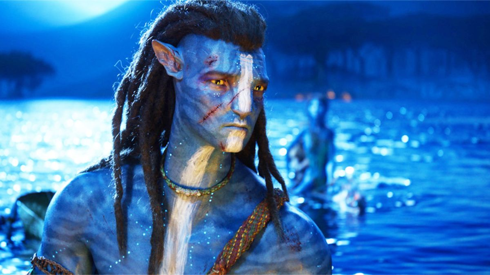
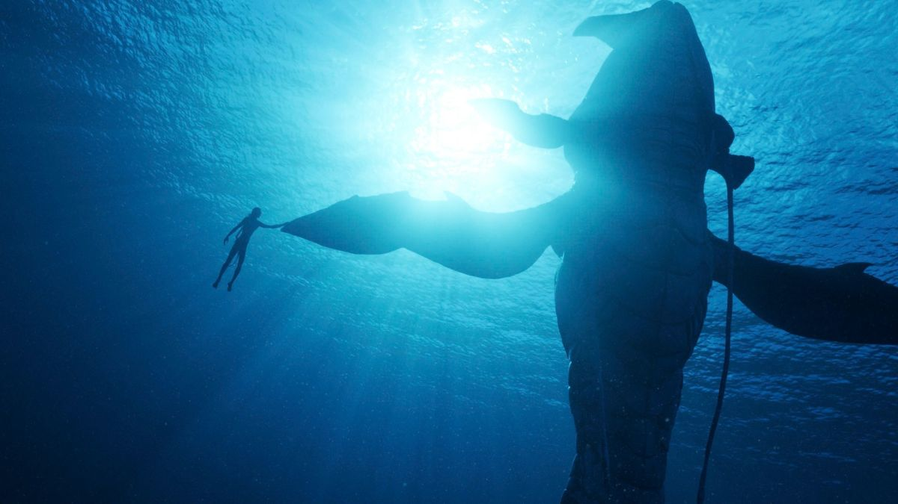
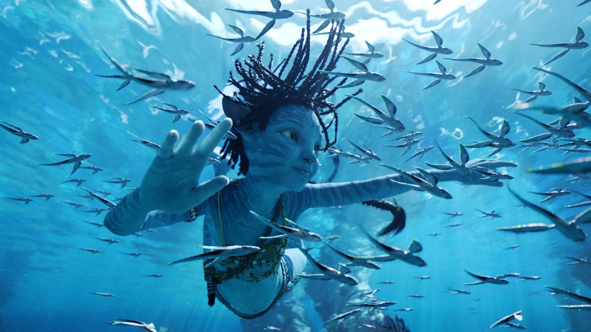

Publicado el 26 de mayo de 2025
Jake y Neytiri forman una familia y deben enfrentarse a nuevas amenazas en las profundidades del océano de Pandora. Esta secuela amplía el universo visual y emocional, reforzando el mensaje ecológico y familiar que atraviesa la saga.
La película introduce nuevas tribus Na’vi acuáticas y tecnologías submarinas que amplían la experiencia de inmersión. Se profundiza en la paternidad, el sacrificio y la identidad cultural en un entorno exuberante y peligroso.
La relación entre padres e hijos y el legado que se transmite es central en esta entrega. Cameron vuelve a combinar tecnología punta con una historia de raíz humana, logrando una vez más una película tan espectacular como conmovedora.
